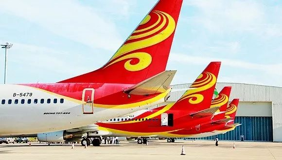

如果流感疫苗接种率达到 40%，发热门诊还会被挤爆吗？
原文链接 备份链接 其中 2009 年甲型 H1N1 流感疫情，在 2009 年 5 月 11 日至 2010 年 8 月 10 日间，中国内地共确诊 128033 例，死亡 805 例，病死率 0.6%。【13】 作为对比，内地除湖北省 …
记者：陈晓双
“
陈峰曾表示，2020年是海航化解流动性风险的决胜之年。不过对于尾大不掉的海航而言，面对庞大的负债，资产处置和回归主业都显得举步维艰。
”
新冠病毒肺炎疫情短期内对民航业产生巨大冲击。
民航局副局长李健在国务院联防联控机制新闻发布会上介绍，从1月25日至2月14日，民航日均运输旅客47万人次，是去年同期的1/4。2月15日至23日，客流量将再减半，日均旅客预计不超过20万人次，客流量不足高峰时期的1/10，客座率不足40%。
对于此前承压的海航而言，更是雪上加霜。据航班管家统计，1月23日到2月18日，海南航空航班执飞量6695架次，日均248架次，航班平均执飞率31%。
有海航空乘告诉界面新闻记者，目前自己有一个月无薪轮休，轮休是否延长待定。也有海航机务也表示，目前工作状态是工作半个月，半个月无薪休假。
海航旗下的香港航空也受到影响。据当地媒体报道，香港航空计划裁员约400人，且地勤人员每月至少放两周无薪假。
海南航空遭遇流动性危机由来已久，有空乘透露之前已经拖欠了半年的飞行小时费，而有些合同到期的空乘不再续签。此外，有不少海航员工反映，投入海航旗下的理财产品聚宝汇的资金，一直未能按时兑付。
据统计，2019年海航控股已经先后出售了至少29架飞机，交易总金额超过70亿元。
尽管近期采取了资产重组、发债贷款等措施，但海航问题由来已久，目前现金流仍捉襟见肘，突发疫情直接将其逼到了生死关头。
航油是航空公司主要成本支出项，约占总成本的20%-30%。但从2017年起，海航多次爆出拖欠油款，甚至面临停止供油的窘境。
2018年2月，中航油控股的华南蓝天航空油料有限公司曾发函称，海航于2017年10月至2018年3月，一直未按照合同约定支付油款，要求海航在规定期限前支付油款及违约金，否则将停止供油。海航最终支付了拖欠的油款。
而到2019年4月，中航油直接请求冻结海航名下银行账户中5.72亿元的存款或查封、扣押其他等值财产。
无力支付油款，只是海航深陷债务危机的问题之一。根据《海航集团公司债券2019年半年度报告》，其净亏损达到35.2亿元；总资产为9806.2亿元，总负债则达到7067.3亿元，资产负债率为72.07%。而海航集团面临着巨大的短期还款压力，其短期借款达到950.71亿元，一年内到期的非流动性负债达到780.58亿元。
航空主业的表现也一直深受拖累。海航2018年财报显示，报告期内海航一年内到期的非流动负债金额达到684.5亿元，同比上一年的172.15亿元激增297.61%。
事实上，在整个海航集团内，航空业务运营主体是最健康的资产，作为海航集团主业，航空业务表现平稳，海南航空九次蝉联“五星航空公司”称号。2019年1-6月，海南航空的运营主体海航控股实现营业收入350.35 亿元，同比增长6.36%。
对于海航危机，董事长陈峰多次强调表示，海航要处置资产，回归航空主业，化解流动性风险。
2018年以来，海航集团从买买买逐渐进入卖卖卖模式。陆续出售旗下写字楼、酒店、商业地产、在建工程、非上市公司股权等多领域资产。
为了展现出回归航空主业决心，海航集团对组织架构进行多轮调整。2017年之前，海航集团拥有航空、实业、资本、基础、物流等七大大业务板块，后调整为海航资本、海航科技、海航航旅和海航物流4个板块。2019年1月，海航集团旗下仅保留海航航空和海航物流两个板块。到10月，海航集团旗下产业板块仅有海航航空，海航物流板块被撤销。
就航空业本身，海航也加速瘦身。去年7月，海航旗下香港快运以49.3亿港元（约合42.2亿人民币）的价格卖给了国泰航空。此外海航也对旗下多家航空“小马甲”进行重组。从2018年底陆续与地方政府签订4家航空公司的重组协议，其中包括乌鲁木齐航空、首都航空、北部湾航空和西部航空。
作为上市公司，海航控股承担了海航集团“输血”的重任。2019年，海航控股以15.6亿元收购新华航空12.18%股权，不超过33.4亿元购买海航技术60.78%股权，以及以6.96亿元购买海南天羽飞训100%股权，合计交易额约56亿元，此举直接为海航集团注资。去年9月，海航控股还发布公告称将为海航集团提供16.8亿元借款担保。
2019年12月，海航控股发布公告称，拟向国家开发银行海南省分行申请贷款40亿元人民币，用于偿还公司存量贷款。
陈峰曾表示，2020年是海航化解流动性风险的决胜之年。不过对于尾大不掉的海航而言，面对庞大的负债，资产处置和回归主业都显得举步维艰。
2月19日有传闻称，新冠病毒疫情影响了海航集团的偿债能力之下，海航集团总部所处的海南省政府正在谈判接管海航集团。
《中国经营报》报道称，2月20日早间，海航集团一位高管对该报记者否认了这一传闻，他表示相关传闻并不确切，他从未了解到关于海航集团的接管、拆分或重组等相关消息。
海航的危机是否将会带来航空业的进一步重组？2月18日，国资委副主任任洪斌在接受媒体采访中表示，目前是否是航空业重组机会，还需要尊重企业意愿，按行业发展规律操作，国资委会像平常的结构调整一样支持企业。目前未收到三大航重组的相关提案。

原文链接 备份链接 其中 2009 年甲型 H1N1 流感疫情，在 2009 年 5 月 11 日至 2010 年 8 月 10 日间，中国内地共确诊 128033 例，死亡 805 例，病死率 0.6%。【13】 作为对比，内地除湖北省 …
原文链接 备份链接 作者：冯超 来源：*商业人物*（ID：*biz-leaders）* 壹 中国人知道了一种病毒，也知道了一个发布数据，名为“卫生健康委员会”的机构。该机构简称就是卫健委。 各级的卫生健康委员会是从各级卫生计生委（局）改 …
原文链接 备份链接 “ 经调查，韩红基金会自成立以来，总体上运作比较规范，但也发现部分投资事项公开不及时，在未取得公开募捐资格前有公开募捐行为。现已要求韩红基金会限期改正，依法规范运作。 ” 2月13日，我局收到微博账户司马3忌发来的举报 …
原文链接 备份链接 - 编者按 - 回顾新冠肺炎疫情，可以看到一个关键日期，2019年12月31日。这一天，国家卫健委专家组在武汉开会，香港提出对疫情的关注。如果这天会议确定要采取行动，包括不宣传但行动的外松内紧，而不是掉以轻心，可能对 …
原文链接 备份链接 第三方检测机构测出首例“冠状病毒未分型”后，仅电话通知了医院。三天后，第二例报告单上写着“SARS冠状病毒”。那时没人想到，这是一种来势汹汹的新型冠状病毒发起的攻击 文 |《财经》记者 信娜 王小《财经》记者 孙爱民 …